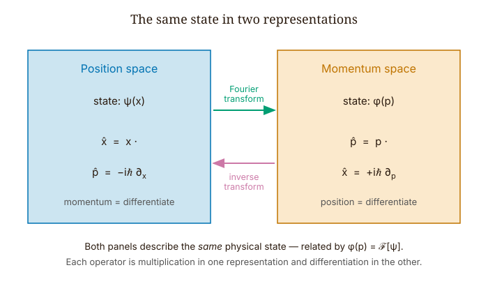
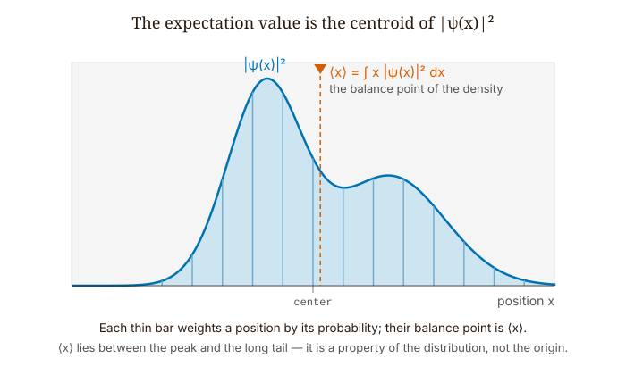
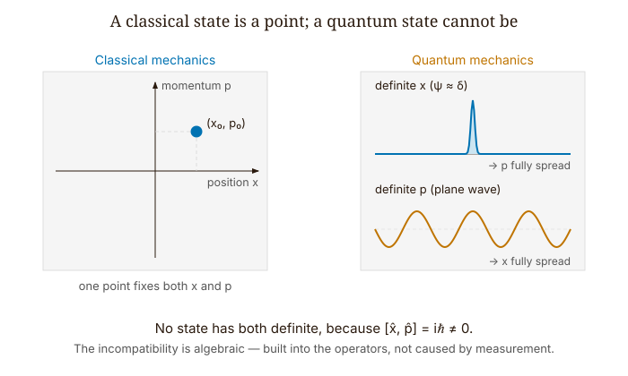
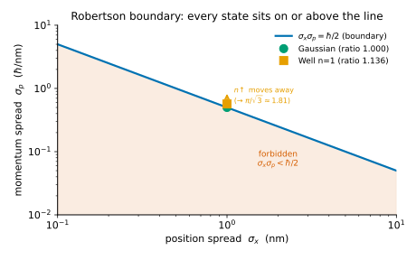

Quantum Mechanics · Volume 1
Chapter 7 — Operators and Uncertainty
Consider an experiment we can carry out, at least in principle. We take an electron and prepare it in exactly the same state a thousand times, using the same apparatus, the same procedure, and identical initial conditions. Each time we measure its position, and we get a thousand different numbers. We collect them into a histogram, which has a mean \(\langle x\rangle\) and a spread \(\sigma_x\).
Now we repeat the whole experiment with a thousand fresh, identically prepared copies, but this time we measure momentum instead. We get another histogram, another mean \(\langle p\rangle\), and another spread \(\sigma_p\).
What we find is this: no matter how cleverly we prepare the state, the product \(\sigma_x\sigma_p\) never falls below \(\hbar/2\). We can narrow the position distribution as much as we wish, but the momentum distribution widens to compensate. No single copy of the electron is ever measured twice. No measurement disturbs any other measurement. The limitation lives in the state itself, before any apparatus touches it.
The question we want to answer is what feature of the mathematics produces this bound. The answer lies in the structure of operators, and specifically in the relationship between the operators for position and momentum. That relationship has a name, and once we see it, the inequality follows in about half a page.
7.1 Observables as Operators
In quantum mechanics, every physical observable is represented by a linear operator \(\hat{A}\) that maps wave functions to wave functions:
\[\hat{A}(\alpha\psi + \beta\phi) = \alpha\hat{A}\psi + \beta\hat{A}\phi. \tag{7.1}\]
Why operators? Because we need a rule for extracting a number — an average measurement outcome — from a wave function. The expectation value \(\langle\hat{A}\rangle = \int\psi^*(\hat{A}\psi)\,dx\) is that rule.
Not every linear operator qualifies as an observable, however. The requirement is Hermiticity: for any two normalizable wave functions \(\psi\) and \(\phi\),
\[\int_{-\infty}^{\infty}\phi^*\,(\hat{A}\psi)\,dx = \int_{-\infty}^{\infty}(\hat{A}\phi)^*\,\psi\,dx. \tag{7.2}\]
Hermiticity has three consequences that earn their place. First, the eigenvalues of a Hermitian operator are real, and since measurement outcomes are real numbers, this is not negotiable. Second, eigenstates with distinct eigenvalues are orthogonal, so the measurement outcomes live in an orthogonal basis. Third — this is the spectral theorem — the eigenstates form a complete set, so we can expand any state as \(|\psi\rangle = \sum_n c_n|a_n\rangle\), where the probability of obtaining outcome \(a_n\) is \(|c_n|^2\). This is the Born rule written in operator language.
| Classical observable | Quantum observable | |
|---|---|---|
| Mathematical object | a real-valued function on phase space, \(f(x,p)\) | a Hermitian operator \(\hat{A}\) on Hilbert space |
| Measurement outcome | the value \(f(x,p)\) evaluated at the state’s phase point | an eigenvalue \(a_n\) of \(\hat{A}\), always real |
| State with a definite value | every state — a point \((x,p)\) fixes all observables at once | only an eigenstate of \(\hat{A}\) |
| Two observables both definite | always — a single point fixes both | only when \([\hat{A},\hat{B}] = 0\) |
Table 7.1 — Observables in classical and quantum mechanics. The shift from a number-valued function to a Hermitian operator is what introduces the possibility that two observables cannot be sharp at the same time: classically a state is a point that fixes every quantity, while quantum-mechanically a state has a definite value of \(\hat{A}\) only if it is an eigenstate of \(\hat{A}\), and of two observables only when their commutator vanishes.
The position operator is the simplest case: \((\hat{x}\psi)(x) = x\psi(x)\), multiplication by the real number \(x\), Hermitian by inspection.
The momentum operator is:
\[\hat{p} = -i\hbar\frac{\partial}{\partial x}. \tag{7.3}\]
The factors \(-i\) and \(\hbar\) are not decorative. We check Hermiticity by computing \(\int\phi^*(\hat{p}\psi)\,dx\):
\[\int_{-\infty}^{\infty}\phi^*\!\left(-i\hbar\frac{\partial\psi}{\partial x}\right)dx.\]
We integrate by parts. The boundary term \(\phi^*\psi\big|_{-\infty}^{\infty}\) vanishes because normalizable wave functions go to zero at \(\pm\infty\). What remains:
\[= \int_{-\infty}^{\infty}\!\left(i\hbar\frac{\partial\phi^*}{\partial x}\right)\psi\,dx = \int_{-\infty}^{\infty}\!\left(-i\hbar\frac{\partial\phi}{\partial x}\right)^*\psi\,dx = \int_{-\infty}^{\infty}(\hat{p}\phi)^*\psi\,dx. \tag{7.4}\]
This is Hermitian, and the factor of \(-i\) is what makes it work. Without it, the derivative \(\partial_x\) would be anti-Hermitian and its eigenvalues would be imaginary — not measurable.
Why is this the right momentum operator, rather than some other Hermitian combination of derivatives? The cleanest reason comes from Fourier analysis. A plane wave \(e^{ipx/\hbar}\) is the eigenfunction of \(-i\hbar\partial_x\) with eigenvalue \(p\): differentiating \(e^{ipx/\hbar}\) pulls down \(ip/\hbar\), and \(-i\hbar \cdot ip/\hbar = p\). In momentum space, \(\hat{p}\) is multiplication by \(p\); in position space, it is differentiation. The Fourier transform connects the two representations, and \(-i\hbar\partial_x\) is the unique Hermitian first-order differential operator that matches \(\text{multiplication-}\text{by-}p\) in momentum space.

7.2 Expectation Values and Variances
Given a Hermitian operator \(\hat{A}\) and a normalized state \(\psi\), the expectation value is:
\[\langle\hat{A}\rangle = \int_{-\infty}^{\infty}\psi^*(x)\,(\hat{A}\psi)(x)\,dx. \tag{7.5}\]
For position, \(\hat{A} = \hat{x}\), this reduces to \(\int x|\psi|^2\,dx\) — the centroid of the probability density. For momentum, \(\hat{A} = \hat{p}\), it becomes \(\int\psi^*(-i\hbar\partial_x\psi)\,dx\), and now the sign matters.

Take the Gaussian wave packet \(\psi = Ne^{-x^2/2a^2}e^{ik_0 x}\). Differentiating:
\[\partial_x\psi = \psi\!\left(-\frac{x}{a^2} + ik_0\right), \qquad -i\hbar\partial_x\psi = \psi\!\left(\frac{i\hbar x}{a^2} + \hbar k_0\right). \tag{7.6}\]
We integrate against \(\psi^*\). The term \(i\hbar x/a^2\) is odd times the symmetric density \(|\psi|^2\), so it integrates to zero. What survives is \(\hbar k_0 \int|\psi|^2\,dx = \hbar k_0\). A packet moving right with \(k_0 > 0\) has \(\langle p\rangle = \hbar k_0 > 0\).
If we use \(+i\hbar\partial_x\) instead — the wrong sign — we get \(-\hbar k_0 < 0\), the wrong direction. The minus sign in \(\hat{p} = -i\hbar\partial_x\) is load-bearing, not a convention.
The variance of observable \(\hat{A}\) in state \(\psi\) is:
\[\sigma_A^2 = \langle\hat{A}^2\rangle - \langle\hat{A}\rangle^2 = \langle(\hat{A} - \langle\hat{A}\rangle)^2\rangle. \tag{7.7}\]
This is the spread of measurement outcomes across many identically prepared copies of the state. It is not the uncertainty in any single measurement; it is the width of the histogram.
7.3 The Canonical Commutation Relation
The commutator of two operators is \([\hat{A}, \hat{B}] \equiv \hat{A}\hat{B} - \hat{B}\hat{A}\). If it is zero, the operators commute and share a common eigenbasis, so both observables can have definite values at the same time. If it is nonzero, they cannot.
We compute \([\hat{x}, \hat{p}]\) by acting on a test function \(\psi\):
\[[\hat{x},\hat{p}]\psi = \hat{x}(\hat{p}\psi) - \hat{p}(\hat{x}\psi). \tag{7.8}\]
First term: \(\hat{p}\) differentiates, then \(\hat{x}\) multiplies:
\[\hat{x}(\hat{p}\psi) = x\cdot\left(-i\hbar\frac{\partial\psi}{\partial x}\right) = -i\hbar x\frac{\partial\psi}{\partial x}. \tag{7.9}\]
Second term: \(\hat{x}\) multiplies first, giving \(x\psi\), then \(\hat{p}\) differentiates the product:
\[\hat{p}(\hat{x}\psi) = -i\hbar\frac{\partial}{\partial x}(x\psi) = -i\hbar\!\left(\psi + x\frac{\partial\psi}{\partial x}\right) = -i\hbar\psi - i\hbar x\frac{\partial\psi}{\partial x}. \tag{7.10}\]
The product rule generates an extra \(-i\hbar\psi\). Subtracting the second term from the first:
\[[\hat{x},\hat{p}]\psi = -i\hbar x\frac{\partial\psi}{\partial x} - \left(-i\hbar\psi - i\hbar x\frac{\partial\psi}{\partial x}\right) = i\hbar\psi. \tag{7.11}\]
Since this holds for any \(\psi\):
\[\boxed{[\hat{x}, \hat{p}] = i\hbar.} \tag{7.12}\]
This is the canonical commutation relation — the single algebraic fact that separates quantum mechanics from classical mechanics. In classical mechanics the counterpart statement is the Poisson bracket \(\{x, p\} = 1\), a plain number with no factor of \(i\hbar\) and no incompatibility, because classical observables are ordinary functions that always commute. The canonical commutation relation is the quantum version, and the \(i\hbar\) cannot be removed. Everything that follows about uncertainty is a consequence of this one line.
Because \([\hat{x}, \hat{p}] \neq 0\), position and momentum share no common eigenbasis. Any state with definite position (a Dirac delta in \(x\)) is infinitely spread in momentum, and any state with definite momentum (a plane wave) is infinitely spread in position. The incompatibility is not about measurement at all. It is algebraic, built into the operators themselves.

7.4 The Robertson Inequality
Here is the theorem that links the commutator to the uncertainty bound. No measurement is performed and no particle is disturbed. The proof is linear algebra.
Robertson inequality (1929). For any two Hermitian operators \(\hat{A}\), \(\hat{B}\) and any state \(\psi\):
\[\sigma_A\,\sigma_B \geq \frac{1}{2}\bigl|\langle[\hat{A},\hat{B}]\rangle\bigr|. \tag{7.13}\]
The proof has three moves. We define shifted operators \(\hat{A}' = \hat{A} - \langle\hat{A}\rangle\) and \(\hat{B}' = \hat{B} - \langle\hat{B}\rangle\), so that \(\sigma_A^2 = \|\hat{A}'|\psi\rangle\|^2\) and \(\sigma_B^2 = \|\hat{B}'|\psi\rangle\|^2\).
Move 1 (Cauchy-Schwarz):
\[\sigma_A^2\sigma_B^2 = \|\hat{A}'|\psi\rangle\|^2\|\hat{B}'|\psi\rangle\|^2 \geq |\langle\hat{A}'\hat{B}'\rangle|^2. \tag{7.14}\]
Move 2 (decompose the inner product): we write \(\hat{A}'\hat{B}' = \tfrac{1}{2}\{\hat{A}',\hat{B}'\} + \tfrac{1}{2}[\hat{A}',\hat{B}']\). The anticommutator \(\{\hat{A}',\hat{B}'\}\) is Hermitian, so its expectation is real. The commutator \([\hat{A}',\hat{B}'] = [\hat{A},\hat{B}]\) is anti-Hermitian, so its expectation is purely imaginary. A real number and an imaginary number add in modulus:
\[|\langle\hat{A}'\hat{B}'\rangle|^2 = \frac{1}{4}\langle\{\hat{A}',\hat{B}'\}\rangle^2 + \frac{1}{4}|\langle[\hat{A},\hat{B}]\rangle|^2. \tag{7.15}\]
Move 3 (drop the non-negative anticommutator term to get a lower bound):
\[\sigma_A^2\sigma_B^2 \geq \frac{1}{4}|\langle[\hat{A},\hat{B}]\rangle|^2. \tag{7.16}\]
Taking the square root: \(\sigma_A\sigma_B \geq \tfrac{1}{2}|\langle[\hat{A},\hat{B}]\rangle|\). \(\square\)
Now we plug in \(\hat{A} = \hat{x}\), \(\hat{B} = \hat{p}\), \([\hat{x},\hat{p}] = i\hbar\):
\[\sigma_x\,\sigma_p \geq \frac{1}{2}|i\hbar| = \frac{\hbar}{2}. \tag{7.17}\]
This is the Kennard inequality — proved by Kennard in 1927 and placed in this general algebraic framework by Robertson in 1929. It is a theorem derived from the canonical commutation relation and Cauchy-Schwarz. No experiment appears in the proof. The bound is fixed by how the state is prepared, not by any measurement.
Notice what we dropped in Move 3: the anticommutator term \(\tfrac{1}{4}\langle\{\hat{A}',\hat{B}'\}\rangle^2\), which is non-negative. Dropping it weakens the bound. Schrödinger (1930) kept it and obtained a tighter inequality. The extra term is (twice) the position–momentum covariance of the state, and it vanishes for any state with a real wave function (the Gaussian at rest, and every square-well eigenstate alike), so for all of those the two bounds agree. It comes alive only for states with a genuine position–momentum correlation, such as the freely spreading Gaussian of Chapter 4 at \(t > 0\): the packet develops a chirp, the covariance grows, and there the Schrödinger bound is strictly tighter than Robertson. In fact the spreading Gaussian saturates it exactly. The exercises explore this.

7.5 A Worked Calculation: The Infinite Square Well
In Chapter 3 we found \(\sigma_x\sigma_p = \hbar/2\) for the Gaussian. Let us now work it out for a different state — the infinite-square-well ground state — to see that the bound is satisfied but not saturated.
The state on \([0,L]\) is \(\psi_1(x) = \sqrt{2/L}\,\sin(\pi x/L)\).
Position mean. By symmetry of \(\sin^2(\pi x/L)\) around \(x = L/2\): \(\langle x\rangle = L/2\).
\(\langle x^2\rangle\). Integrating \(x^2\sin^2(\pi x/L)\) over \([0,L]\) (using \(\sin^2\theta = (1-\cos 2\theta)/2\) and integrating by parts twice) gives:
\[\langle x^2\rangle = L^2\!\left(\frac{1}{3} - \frac{1}{2\pi^2}\right). \tag{7.18}\]
Position variance:
\[\sigma_x^2 = L^2\!\left(\frac{1}{3} - \frac{1}{2\pi^2}\right) - \frac{L^2}{4} = L^2\!\left(\frac{1}{12} - \frac{1}{2\pi^2}\right) \approx 0.0326\,L^2. \tag{7.19}\]
So \(\sigma_x \approx 0.181\,L\).
Momentum mean. The ground state is a standing wave — an equal superposition of \(e^{i\pi x/L}\) (rightward) and \(e^{-i\pi x/L}\) (leftward). The equal and opposite contributions cancel: \(\langle p\rangle = 0\). We confirm by direct integral: the integrand \(\sin(\pi x/L)\cdot\cos(\pi x/L) = \tfrac{1}{2}\sin(2\pi x/L)\) integrates to zero over a full period.
\(\langle p^2\rangle\). Here is an operator-algebra shortcut that beats direct integration. The TISE says \(\hat{H}\psi_1 = E_1\psi_1\) with \(E_1 = \pi^2\hbar^2/(2mL^2)\). Inside the well, \(\hat{H} = \hat{p}^2/2m\), so \(\hat{p}^2\psi_1 = 2mE_1\psi_1 = (\hbar\pi/L)^2\psi_1\). Therefore:
\[\langle p^2\rangle = \left(\frac{\hbar\pi}{L}\right)^2\int|\psi_1|^2\,dx = \left(\frac{\hbar\pi}{L}\right)^2. \tag{7.20}\]
Momentum variance: \(\sigma_p^2 = \langle p^2\rangle - \langle p\rangle^2 = (\hbar\pi/L)^2\), so \(\sigma_p = \hbar\pi/L\).
The product:
\[\sigma_x\sigma_p \approx 0.181\,L \cdot \frac{\hbar\pi}{L} = 0.181\pi\hbar \approx 0.568\,\hbar. \tag{7.21}\]
Since \(\hbar/2 = 0.500\,\hbar\), the product exceeds the bound. The ratio \(\sigma_x\sigma_p/(\hbar/2) \approx 1.136\).
Why does the square-well ground state not saturate the bound? Saturation requires \(\hat{A}'|\psi\rangle = i\lambda\hat{B}'|\psi\rangle\) for some real \(\lambda\) — that is, the Cauchy-Schwarz step must hold with equality, which demands that the two vectors be proportional. For \(\hat{A}' = \hat{x} - \langle x\rangle\) and \(\hat{B}' = \hat{p} - \langle p\rangle\), this condition translates to a differential equation whose only normalizable solution is the Gaussian. The square-well ground state has hard walls requiring \(\psi(0) = \psi(L) = 0\), so it cannot be Gaussian. Its product \(\sigma_x\sigma_p\) therefore lies strictly above \(\hbar/2\).
Open the Robertson boundary simulation from this chapter, select the infinite-well state with \(n = 1\): the ratio reads approximately \(1.136\), independent of \(L\). That number is this calculation, done numerically.
7.6 What the Uncertainty Principle Is Not About
Many textbooks tell a story — Heisenberg’s gamma-ray microscope — in which a photon used to locate an electron kicks it, disturbing its momentum in an uncontrollable way. The story is physically illuminating, but it describes a different statement from the Kennard inequality.
The Kennard inequality is about preparation, not measurement. We prepare a million copies of the same state, measure position on half and momentum on the other half. No copy is measured twice. No particle is kicked by any photon. And yet \(\sigma_x\sigma_p \geq \hbar/2\). The bound is set by the shape of \(\psi\), before any measurement begins.
The microscope story describes instead an error-disturbance relation: if we measure position with precision \(\epsilon\), the act of measurement introduces a momentum disturbance \(\eta\), and \(\epsilon\cdot\eta\) satisfies some bound. Ozawa formalized this in 2003 and proved that the relation takes a different form from Kennard’s. Erhart et al. tested both experimentally in 2012. They are different inequalities, with different mathematical forms and different physical meanings. Conflating them is the most persistent conceptual error in introductory quantum mechanics.
Looking Ahead
The next chapter, Chapter 8 — The Quantum Harmonic Oscillator, uses the operator formalism to solve the most important potential in physics by a purely algebraic method, building a ladder of equally spaced energy levels from a single commutator.
Interactive Simulations
These companion simulations run in the browser and accompany this chapter online.
- Uncertainty explorer — compute σx, σp and their product for different states.
- Robertson boundary — see how states sit relative to the Robertson/Kennard bound σxσp ≥ ħ/2.
Exercises
Warm-up
-
[Hermiticity of the momentum operator] Prove that \(\hat{p} = -i\hbar\partial_x\) is Hermitian using integration by parts. (a) State explicitly what boundary condition on \(\psi\) and \(\phi\) is required for the boundary term to vanish, and why it holds for any normalizable state. (b) What would go wrong if you replaced \(\hat{p}\) with the real operator \(\hbar\partial_x\) (without the \(-i\))? What this tests: tracing exactly why the \(-i\) is structural, not cosmetic — and what Hermiticity requires at the boundary.
-
[Canonical commutation relation] Derive \([\hat{x},\hat{p}] = i\hbar\) step by step, applying both operators to a test function \(\psi\). Show every product-rule term explicitly. (a) At which step does the \(i\hbar\) emerge? (b) What would \([\hat{x},\hat{p}]\) be if \(\hat{p}\) were defined as \(+i\hbar\partial_x\)? © Compute \([\hat{p},\hat{x}]\) and verify it equals \(-i\hbar\). What this tests: mechanical fluency with commutators and the origin of the canonical relation in the product rule.
-
[Expectation values for a Gaussian] For \(\psi(x) = (1/\pi a^2)^{1/4}e^{-x^2/2a^2}e^{ik_0 x}\) with \(a = 2\) nm, \(k_0 = 3\) \(\text{nm}^{-1}\): (a) without computing integrals, state \(\langle x\rangle\) and \(\langle p\rangle\) and justify each in one sentence; (b) write the integrals for \(\langle x^2\rangle\) and \(\langle p^2\rangle\) and use the Chapter 3 results to evaluate them; © compute \(\sigma_x\), \(\sigma_p\), and their product. What this tests: applying the expectation-value formalism without redundant integration, and verifying the Kennard bound is saturated.
Application
-
[Infinite-square-well uncertainty for higher modes] For \(\psi_n = \sqrt{2/L}\sin(n\pi x/L)\) on \([0,L]\): (a) show \(\langle p\rangle = 0\) for all \(n\); (b) use \(\hat{p}^2\psi_n = (n\hbar\pi/L)^2\psi_n\) to find \(\sigma_p = n\hbar\pi/L\); © show \(\sigma_x^2 = L^2(1/12 - 1/(2n^2\pi^2))\) and verify for \(n=1\); (d) show that \(\sigma_x\sigma_p/(\hbar/2) \approx (\pi/\sqrt{3})\,n\) for large \(n\) — so it grows without bound — and interpret why (the position spread saturates at \(L/\sqrt{12}\) while \(\sigma_p = n\hbar\pi/L\) grows linearly in \(n\)). What this tests: using the TISE as an operator-algebra shortcut, and tracing the \(\text{large-}n\) behavior toward the classical limit.
-
[Robertson bound from an eigenstate] For any eigenstate \(\hat{A}\psi = \lambda\psi\): (a) show \(\sigma_A = 0\); (b) for \(\hat{A} = \hat{p}\) and \(\psi = e^{ik_0 x}\) (plane wave), what does Robertson say about \(\sigma_x\)? © Resolve the tension: \(e^{ik_0 x}\) is not normalizable, so \(\sigma_x\) is infinite. How does the Robertson inequality still hold? What this tests: applying the inequality to a limiting case and confronting the normalizability requirement.
-
[Robertson for Pauli operators] The Pauli matrices satisfy \([\sigma_x, \sigma_z] = -2i\sigma_y\). For the qubit state \(|\psi\rangle = \cos(\theta/2)|0\rangle + e^{i\phi}\sin(\theta/2)|1\rangle\): (a) show \(\langle\sigma_y\rangle = \sin\theta\sin\phi\), and note that for real coefficients (\(\phi = 0\)) the Robertson bound is trivially zero even though both spreads are nonzero: the bound is state-dependent; (b) write down the Robertson bound \(\Delta\sigma_x\,\Delta\sigma_z \geq |\langle\sigma_y\rangle|\) (here \(\Delta\sigma_x\) is the standard deviation of the observable \(\sigma_x\)); © at \(\theta = \pi/2\), \(\phi = \pi/2\), compute \(\Delta\sigma_x\) and \(\Delta\sigma_z\) and verify that the bound is not only satisfied but saturated; (d) for which \(\theta\) and \(\phi\) is the bound saturated in general? What this tests: applying Robertson to finite-dimensional operators and seeing the same structure in a different physical system.
Synthesis
-
[The minimum-uncertainty state] The saturation condition for Cauchy-Schwarz is \(\hat{A}'|\psi\rangle = c\hat{B}'|\psi\rangle\) for some complex constant \(c\). (a) Set \(\hat{A}' = \hat{x} - \langle x\rangle\) and \(\hat{B}' = \hat{p} - \langle p\rangle\), and write this as a differential equation for \(\psi(x)\). (b) Show the solution is a Gaussian. © For saturation of Robertson (not just Cauchy-Schwarz), \(c\) must be purely imaginary: \(c = i\lambda\), \(\lambda\in\mathbb{R}\). Show this forces the Gaussian to decay. What this tests: working backward from the equality condition to characterize the minimum-uncertainty state as the Gaussian — not as a given, but as a derived result.
-
[Ehrenfest’s theorem] Ehrenfest’s theorem: \(d\langle x\rangle/dt = \langle p\rangle/m\) and \(d\langle p\rangle/dt = -\langle\partial V/\partial x\rangle\). (a) Derive the first by differentiating \(\langle x\rangle = \int x|\psi|^2\,dx\) and using the Schrödinger equation. (b) Derive the second by differentiating \(\langle p\rangle = \int\psi^*(-i\hbar\partial_x\psi)\,dx\). © For the free particle, what do these say about \(\langle x\rangle(t)\) and \(\langle p\rangle(t)\)? Connect to the group-velocity result from Chapter 4. What this tests: connecting the operator formalism to the classical equations of motion and seeing where they agree and where they diverge.
Challenge
- [The Schrödinger uncertainty relation] (a) In the Robertson proof, show explicitly that the dropped anticommutator term \(\tfrac{1}{4}\langle\{\hat{x}',\hat{p}'\}\rangle^2\) is non-negative. (b) Retain it to obtain the Schrödinger bound: \(\sigma_x^2\sigma_p^2 \geq \tfrac{1}{4}|\langle\{\hat{x}',\hat{p}'\}\rangle|^2 + \hbar^2/4\). © Show by integration by parts that \(\langle\{\hat{x}',\hat{p}'\}\rangle = 0\) for any real normalizable wave function, so Robertson and Schrödinger agree for the Gaussian at rest and for every square-well eigenstate alike. (d) For the freely spreading Gaussian of Chapter 4 at \(t > 0\) (the chirped packet), argue that the anticommutator term is nonzero and growing, so the Schrödinger bound is strictly tighter than Robertson there, and show that the spreading Gaussian saturates the Schrödinger bound exactly. What this tests: understanding why the dropped term makes Robertson a weaker bound, and seeing the hierarchy Robertson ≤ Schrödinger ≤ actual variance product.
References
Kennard, E. H. (1927). Zur Quantenmechanik einfacher Bewegungstypen. Zeitschrift für Physik, 44, 326–352.
Robertson, H. P. (1929). The uncertainty principle. Physical Review, 34, 163–164.
Schrödinger, E. (1930). Zum Heisenbergschen Unschärfeprinzip. Sitzungsberichte der Preussischen Akademie der Wissenschaften, Physikalisch-mathematische Klasse, 296–303.
Ozawa, M. (2003). Universally valid reformulation of the Heisenberg uncertainty principle on noise and disturbance in measurement. Physical Review A, 67, 042105.
Erhart, J., Sponar, S., Sulyok, G., Badurek, G., Ozawa, M., & Hasegawa, Y. (2012). Experimental demonstration of a universally valid error-disturbance uncertainty relation in spin measurements. Nature Physics, 8, 185–189.
Maassen, H., & Uffink, J. B. M. (1988). Generalized entropic uncertainty relations. Physical Review Letters, 60, 1103–1106.
Griffiths, D. J., & Schroeter, D. F. (2018). Introduction to Quantum Mechanics (3rd ed.). Cambridge University Press. §1.6, §3.5.
Townsend, J. S. (2012). A Modern Approach to Quantum Mechanics (2nd ed.). University Science Books. §3.5.